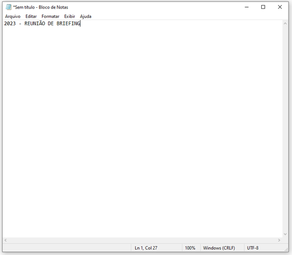

É uma ótima ferramenta para organizar informações. Possui diversos recursos que irão facilitar a sua vida. Pode funcionar como checklist, onde você separa as informações que deseja coletar por tópicos. A ferramenta também te ajuda a priorizar ideias, projetos, e até mesmo listas de tarefas! Já vem com alguns modelos prontos, e aceita diversas integrações.
